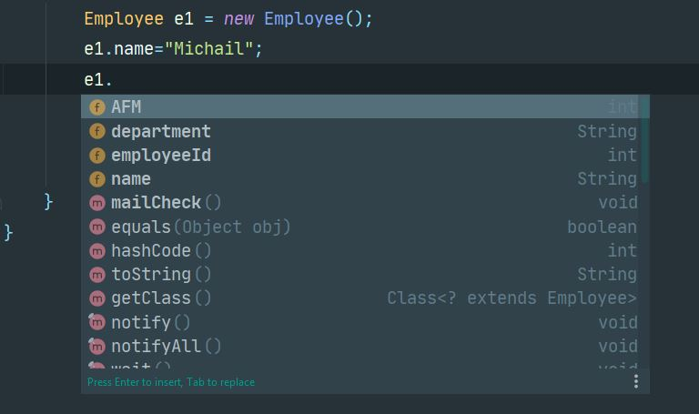
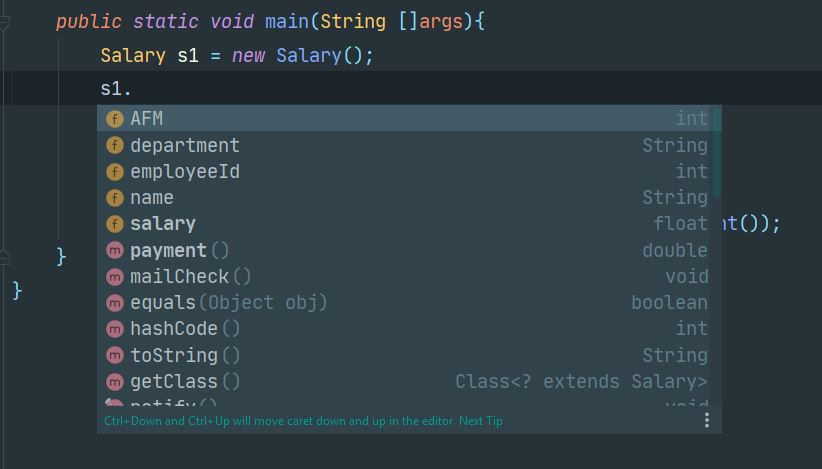

ΔΩΡΕΑΝ ΜΑΘΗΜΑΤΑ JAVA
Στο σημερινό δωρεάν μάθημα Java θα μιλήσουμε για την
κληρονομικότητα (inheritance) και θα εξηγήσουμε γιατί
είναι το πιο σημαντικό στοιχείο του αντικειμενοστραφή
προγραμματισμού (Object-Oriented Programming). Αν και η έννοια είναι
πολύ απλή, τόσο στην κατανόηση της όσο και στην υλοποίηση της, δυσκολεύει
τους αρχάριους προγραμματιστές γιατί προσπαθούν να την μάθουν μέσα από
πολύπλοκα παραδείγματα. Για αυτόν ακριβώς το λόγο, θα αναλύσουμε ένα απλό
παράδειγμα από την αρχή ως το τέλος, όπως θα έκανε κάποιος που ακόμα δεν
έχει πολλή εμπειρία στον προγραμματισμό.
Πριν ξεκινήσουμε, πρέπει να εξηγήσουμε το σενάριο με το οποίο θα
έχουμε σαν βάση της συζήτησης μας. Σε προηγούμενη ενότητα είχαμε δημιουργήσει
την κλάση Employee για να περιγράψουμε προγραμματιστικά τον εργαζόμενο μιας
εταιρείας. Επίσης, είχαμε προσθέσει στην κλάση την έννοια του
encapsulation (αλλάζοντας τους access specifiers από public σε
private μπροστά από τις instance μεταβλητές) όπως και δημιουργήσαμε
getter και setter μεθόδους για να έχουμε πρόσβαση στις instance
μεταβλητές. Τέλος, είχαμε δημιουργήσει κάποιες μεθόδους δίνοντας
ιδιότητες και δυνατότητες στο αντικείμενο. Θα έχουμε λοιπόν αυτήν
την απλή κλάση Employee σαν βάση της συζήτησης μας μόνο που θα
μικρύνουμε τον κώδικα χρησιμοποιώντας public instance μεταβλητές οπότε
δεν χρειάζονται οι getter και setter μέθοδοι. Θα κρατήσουμε όμως δύο
μεθόδους που θα δώσουν κάποιες ιδιότητες στο αντικείμενο. Ας δούμε λοιπόν
τον απλοποιημένο κώδικα της κλάσης Employee. Μπορείτε για αυτή την ενότητα
να δημιουργήσετε ένα καινούργιο project και ένα πακέτο με το όνομα
inheritance μέσα στο οποίο θα γράψετε την κλάση σας.
Employee.java
package inheritance;
class Employee{
public String name;
public int AFM;
public double salary;
public String department;
public int employeeId;
public void mailCheck(){
System.out.println("Mailing a check to " + this.name);
}
public double payment(){
return this.salary/52.0;
}
}
Για να έχουμε ένα ολοκληρωμένο πρόγραμμα, ας γράψουμε και
μια κλάση EmployeeDemo μέσα από την οποία δημιουργούμε αντικείμενα είδος
Employee και καλούμε τις μεταβλητές του για να ορίσουμε κάποιες τιμές.
Employee.java
package inheritance;
public class EmployeeDemo {
public static void main(String []args){
Employee michail = new Employee();
michail.employeeId = 100;
michail.department = "Development";
System.out.println("The employee number "+ michail.employeeId +
" is a team member of the " + michail.department + " department");
}
}
Output
The employee number 100 is a team member of the Development department
Τώρα που έχουμε την πιο απλή του προγράμματός μας, ας δούμε
ποιες είναι οι καινούργιες απαιτήσεις της εφαρμογής μας. Η εταιρεία, για
την οποία δημιουργούμε το πρόγραμμα, μας ενημέρωσε ότι υπάρχουν τουλάχιστον
δύο κατηγορίες εργαζόμενων – εκείνοι που είναι πλήρης απασχόλησης και οι
εξωτερικοί συνεργάτες. Οι πρώτοι έχουν σταθερό μηνιαίο μισθό, ενώ οι δεύτεροι
πληρώνονται με τις ώρες που έχουν δουλέψει. Αν μάλιστα ξεπεράσουν τις 40 ώρες
τότε πληρώνονται και υπερωρίες. Εκτός από τον υπολογισμό του μισθού που
είναι διαφορετικός για κάθε κατηγορία, οι υπόλοιπες
πληροφορίες (name, department, AFM, κτλ) θα πρέπει να υπάρχουν
για όλους τους εργαζόμενους.
Με βάση τα όσα γνωρίζετε μέχρι τώρα, και από την ανάλυση του
προβλήματος, θα πρέπει να δημιουργήσουμε δύο ακόμα κλάσεις – μια κλάση
που περιγράφει τους σταθερούς εργαζόμενους της εταιρείας και μια ακόμα
κλάση για τους εξωτερικούς συνεργάτες. Ας ονομάσουμε την πρώτη κλάση
Salary και την δεύτερη Outsourcing. Aς γράψουμε
τον κώδικα για τις
καινούργιες κλάσεις που προέκυψαν.
Salary.java
package inheritance;
public class Salary {
public String name;
public int AFM;
public double salary;
public String department;
public int employeeId;
public void mailCheck(){
System.out.println("Mailing a check to " + this.name);
}
public double payment(){
return this.salary/52.0;
}
}
Outsourcing.java
package inheritance;
public class Outsourcing {
public String name;
public int AFM;
public double salary;
public String department;
public int employeeId;
public float hourlyRate;
public float hoursWorked;
public void mailCheck(){
System.out.println("Mailing a check to " + this.name);
}
public float payment(){
System.out.println("Computing hourly pay for " + name);
float pay = 0.0F;
if(hoursWorked <= 40)
{
pay = hourlyRate * hoursWorked;
}
else
{
pay = (hourlyRate * 40) + (hourlyRate * (hoursWorked - 40) * 1.5F);
}
return pay;
}
}
Αν παρατηρήσετε προσεκτικά, θα δείτε ότι η αρχική μας κλάση Employee, με
την Salary και την Outsourcing έχουν πολλά κοινά στοιχεία. Στην ουσία επαναλαμβάνουμε
πολλές φορές τον ίδιο κώδικα. Αν συγκρίνουμε την κλάση Employee και την κλάση Salary
θα δείτε ότι είναι ο ίδιος ακριβώς κώδικα. Ενώ αν συγκρίνετε την Employee με την
Outsourcing θα δείτε ότι εκτός από δύο έξτρα instance μεταβλητές που
προστέθηκαν ( hourlyRate και hoursWorked), όλες οι άλλες μεταβλητές
είναι ακριβώς οι ίδιες όπως και η mailCheck( ) μέθοδο. Η μέθοδος
payment( ) στην κλάση Outsourcing χρησιμοποιεί έναν απλό αλγόριθμό για
να υπολογίσει την πληρωμή του εργαζόμενου ανάλογα με τις ώρες εργασίας
του. Αυτά τα πολλά κοινά στοιχεία ανάμεσα στις κλάσεις δεν είναι βασικά
μια απλή παρατήρηση μόνο αλλά και ένα σοβαρό πρόβλημα. Αν χρειαστεί
αργότερα να προσθέσετε μια ακόμα instance μεταβλητή ή να αλλάξετε τον
κώδικα της mailcheck( ) τότε θα πρέπει να το κάνετε για όλες τις
κλάσεις. Θα πρέπει να ξοδευτεί άσκοπα πολύ χρόνος και σίγουρα μπορεί
να ξεχάσετε κάποια αλλαγή που θα προκαλέσει πρόβλημα στον
κώδικα. Οπότε, πως προσεγγίζουμε μια τέτοια κατάσταση? Πριν
απαντήσουμε ας δούμε με την χρήση του UML πως απεικονίζονται οι
κλάσεις μας μέχρι τώρα.
Το όλο μυστικό είναι η παρατήρηση που μόλις κάναμε, δηλαδή ο
εντοπισμός κοινών στοιχείων. Αυτό που θα μπορούσαμε θεωρητικά να κάνουμε
είναι να βάλουμε αυτά τα κοινά στοιχεία σε μια κλάση έτσι ώστε οποιαδήποτε
άλλη κλάση να τα κληρονομεί χωρίς να χρειάζεται να τα ξαναγράψει. Η κάθε
καινούργια κλάση που δημιουργείται απλά θα προσθέτει τα καινούργια στοιχεία
που χρειάζεται. Αυτή η θεωρία πρακτικά και προγραμματιστικά ονομάζεται
inheritance και υποστηρίζεται από την java αν προσθέσουμε την λέξη extends
στην κλάση. Αν για παράδειγμα η Salary κληρονομεί από την Employee τότε θα γράψουμε:
public class Salary extends Employee
Με αυτή την πράξη, αν κάνουμε αντικείμενο από την κλάση Salary θα
δούμε ότι το αντικείμενο από την Salary περιέχει και τα στοιχεία του
Employee και του Salary, ενώ ένα αντικείμενο από την κλάση Employee θα
περιέχει στοιχεία μόνο από την κλάση Employee. Ας δούμε τώρα στην πράξη
πως μπορούμε να αλλάξουμε τον κώδικα των κλάσεων έτσι ώστε να ακολουθήσουμε
την λογική της κληρονομικότητας.
Η αρχή πάντα γίνεται από την πιο γενική κλάση από την οποία θα
κληρονομήσουν όλες οι υπόλοιπες κλάσεις. Στο δικό μας παράδειγμα αυτή η κλάση
είναι η Employee. Όλες οι instance μεταβλητές της κλάσης Employee, εκτός από
την salary, και η μέθοδος mailCheck( ) πρέπει να υπάρχουν σε όλες τις
κλάσεις, οπότε λογικά μπορούμε να τα αφήσουμε στην κλάση Employee. Η
μέθοδος payment( ), μαζί με την instance μεταβλητή salary δεν έχει νόημα
να παραμείνει στην γενική κλάση Employee αφού μας ενδιαφέρει να ξέρουμε
πιο συγκεκριμένα αν είναι Salary ή Outsourcing οπότε δεν θα συμπεριλάβουμε
την payment( ) μέθοδο στην κλάση Employee ούτε και την instance μεταβλητή
salary. Ο τελικός κώδικας της κλάσης Employee θα είναι:
Employee.java
package inheritance;
class Employee{
public String name;
public int AFM;
public String department;
public int employeeId;
public void mailCheck(){
System.out.println("Mailing a check to " + this.name);
}
}
Η κλάση Salary χρειάζεται όλα τα στοιχεία που περιέχει η κλάση Employee
και πρέπει να προσθέσει και μια instance μεταβλητή salary η οποία θα
χρησιμοποιηθεί στην μέθοδο payment( ) που υπολογίζει τον μισθό του
εργαζόμενου ανά εβδομάδα. Η κλάση της Salary, εφόσον κληρονομεί από
την κλάση Employee, απλοποιείται και μετατρέπεται στον εξής κώδικα:
Salary.java
package inheritance;
public class Salary extends Employee{
public float salary;
public double payment(){
return this.salary/52.0;
}
}
Τέλος, ακολουθώντας ακριβώς την ίδια λογική όπως κάναμε με
την κλάση Salary, η κλάση Outsourcing θα περιέχει και εκείνη
μια payment( ) μέθοδο που όμως θα περιέχει διαφορετικό κώδικα ο
οποίος θα υπολογίζει τον μισθό του εργαζόμενου ανάλογα με τις ώρες
που εργάστηκε. Η συγκεκριμένη κλάση θα χρειαστεί δύο έξτρα instance
μεταβλητές να οριστούν για να μπορέσουμε να κάνουμε σωστά τους
υπολογισμούς. Αυτές οι μεταβλητές είναι η hourlyRate και η hoursWorked. Ο
κώδικας της κλάσης Outsourcing αλλάζει στον εξής:
Outsourcing.java
package inheritance;
public class Outsourcing extends Employee{
public float hourlyRate;
public float hoursWorked;
public float payment(){
float pay = 0.0F;
if(hoursWorked <= 40)
{
pay = hourlyRate * hoursWorked;
}
else
{
pay = (hourlyRate * 40) + (hourlyRate * (hoursWorked - 40) * 1.5F);
}
return pay;
}
}
Πως έχει αλλάξει τώρα το UML διάγραμμα μας?

Τώρα είναι ώρα να δημιουργήσουμε μερικά αντικείμενα μέσα
από την EmployeeDemo για να δούμε τι ακριβώς έχουμε καταφέρει. Ας δούμε
πρώτα την δημιουργία ενός αντικειμένου είδος Employee
EmployeeDemo.java
package inheritance;
public class EmployeeDemo {
public static void main(String []args){
Employee e1 = new Employee();
e1.name="Michail";
e1.mailCheck();
System.out.println("The name of the "
+ "employee is " + e1.name);
}
}
Output
Mailing a check to Michail
The name of the employee is Michail
Δημιουργήσαμε ένα αντικείμενο e1 (στην ουσία είναι reference αλλά
καταλαβαίνετε τι εννοώ) και καλέσαμε την instance μεταβλητή για να
δώσουμε ένα όνομα και την μέθοδο mailCheck( ) για να εκτυπώσουμε το
μήνυμα ότι στείλαμε ένα τσεκ στον εργαζόμενο. Έχει όμως νόημα να
κάνουμε αντικείμενο από την κλάση Employee? Όχι δεν έχει, γιατί είναι
πολύ γενική και δεν μας επιτρέπει να κάνουμε υπολογισμό μισθού. Για αυτό
ακριβώς τον λόγο, σε μελλοντική ενότητα δεν θα επιτρέπουμε να παράγονται
αντικείμενα είδος Employee. Όμως, για λόγους σύγκρισης, ας δούμε τι
χαρακτηριστικά και ιδιότητες έχει το αντικείμενο e1.

Βλέπουμε τις τέσσερις μεταβλητές και την mailCheck( ) μέθοδο. Ας
κάνουμε τώρα ένα αντικείμενο είδος Salary.
EmployeeDemo.java
package inheritance;
public class EmployeeDemo {
public static void main(String []args){
Salary s1 = new Salary();
s1.name = "Michail";
s1.salary = 30000;
s1.mailCheck();
System.out.println("Your weekly payment is: " + s1.payment());
}
}
Output
Mailing a check to Michail
Your weekly payment is: 576.9230769230769
Εδώ, λόγω της κληρονομικότητας, το αντικείμενο s1 έχει όλες
τις ιδιότητες του Employee και προσθέτει και την ιδιότητα του
υπολογισμού του μισθού. Έχει περισσότερο νόημα να κάνουμε
αντικείμενο από την Salary γιατί το αντικείμενο μας θα είναι πιο
ολοκληρωμένο όσον αφορά τις πληροφορίες του. Μπορούμε να δούμε
όλα τα στοιχεία που έχει κληρονομήσει.

Με την ίδια ακριβώς λογική θα ήταν πιο χρήσιμο ένα αντικείμενο
είδος Outsourcing παρά ένα αντικείμενο Employee.
EmployeeDemo.java
package inheritance;
public class EmployeeDemo {
public static void main(String []args){
Salary s1 = new Salary();
s1.name = "Michail";
s1.salary = 30000;
s1.mailCheck();
System.out.println("Your weekly payment is: " + s1.payment());
Outsourcing out1 = new Outsourcing();
out1.name = "John";
out1.hourlyRate = 20;
out1.hoursWorked = 43;
out1.mailCheck();
System.out.println("Your payment is: " + out1.payment());
}
}
Output
Mailing a check to Michail
Your weekly payment is: 576.9230769230769
Mailing a check to John
Your payment is: 890.0
Αν δούμε όλες τις ιδιότητες και χαρακτηριστικά που έχει το
αντικείμενο out1 τότε θα δείτε ότι περιέχει όλα όσα περιέχει η
Employee συν δύο έξτρα instance μεταβλητές και την μέθοδο payment( ).
Νομίζω, τώρα που φτάσαμε στο τέλος της ενότητας, ότι η έννοια
της κληρονομικότητας (inheritance) σας είναι ξεκάθαρη και δεν σας
μπερδεύει πια.
Πριν κλείσουμε πρέπει να αναφέρουμε τον αυστηρό κανόνα με
τον οποίο μας περιορίζει η java όταν χρησιμοποιούμε
κληρονομικότητα – μπορούμε να κληρονομήσουμε μόνο από μια άλλη κλάση. Δεν
μπορεί δηλαδή η κλάση Salary να κληρονομήσει και από την Employee και από
την Outsourcing ταυτόχρονα. Αυτό δεν επιτρέπεται. Θα δούμε όμως
σε μελλοντική ενότητα πως
μπορούμε να ξεπεράσουμε αυτό το όριο.
Πίσω στις δωρεάν ενότητες Java Programming

Michail Kassapoglou Admin
Γεια σας, είμαι ο Μιχάλης Κασάπογλου και θα σας διδάξω με τον ποιο απλό
τρόπο να προγραμματίζετε σε Java. Ασχολούμαι με την τεχνική εκπαίδευση
σε διάφορες πλατφόρμες, λειτουργικά συστήματα και γλώσσες προγραμματισμού
πάνω από 20 έτη. Κατέχω έναν αρκετά μεγάλο αριθμό πιστοποιήσεων
και σαν Τraining Lead στην Intrasoft έχω την δυνατότητα να αναβαθμίζω συνεχώς
τις γνώσεις μου και να έχω άμεση επαφή με αληθινά projects και εξειδικευμένες
μεθόδους
ανάπτυξης εφαρμογών που έχουν υψηλές απαιτήσεις.
Για τυχόν ερωτήσεις σας μπορείτε να επικοινωνήσετε μαζί μου
στο Michail.Kassapoglou@gmail.com
Σας ευχαριστώ που επισκεφτήκατε τα δωρεάν μαθήματα προγραμματισμού JAVA.